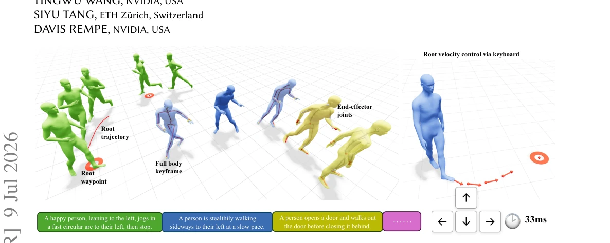
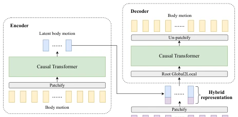
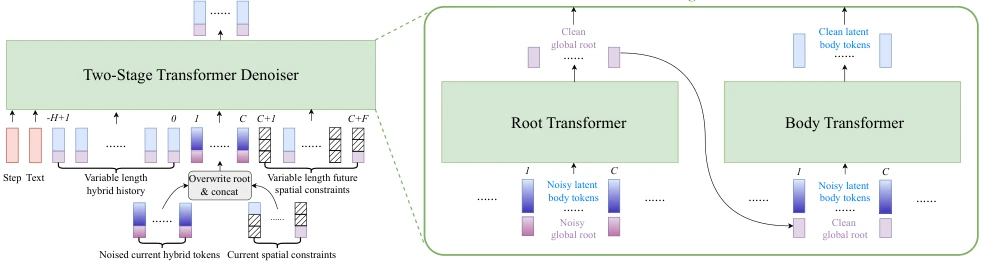
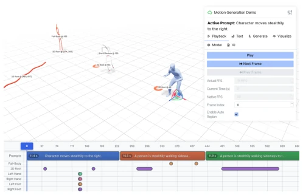
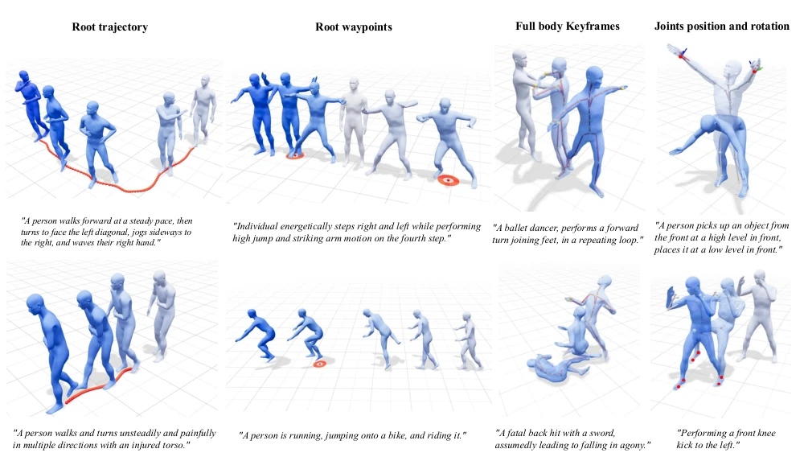

ARDY attempts to walk the tightrope between 'real-time performance' and 'controllability'; the 33ms latency is indeed impressive, but essentially it renders the root trajectory explicit and the body implicit. This 'hybrid' strategy, while clever, may not be a universal solution. It relies on private large-scale libraries like Bones Rigplay; although performance on the public HumanML3D is good, generalization is questionable. For scenarios requiring complex physical interaction, pure motion generation may still be insufficient, after all, it does not mention a physics engine. However, as a foundation for real-time interaction, it is indeed more flexible than DiP or CAMDM, at least it does not require running additional RL policies. Its two-stage design effectively decouples the root and the body, but whether the computational cost grows linearly with sequence length still needs observation.
研究动机Motivation
现有离线扩散模型（如 Kimodo [Rempe et al. 2026]）生成质量高但推理慢，无法用于游戏或机器人实时控制。在线自回归模型（如 CAMDM [Chen et al. 2024]）虽快，但上下文窗口短，难以理解长文本语义或执行长程运动目标。DiP [Tevet et al. 2025] 虽支持文本，但历史上下文受限，导致复杂动作（如“先弯腰捡东西再走”）容易出错。现有方法往往需要测试时优化或额外 RL 策略来保证约束，缺乏原生支持。MotionStreamer [Xiao et al. 2025] 虽支持变长历史，但缺乏运动学约束。因此，亟需一种既能实时响应又能理解长程语义的生成框架。
Existing offline diffusion models (such as Kimodo [Rempe et al. 2026]) generate high quality but have slow inference, unable to be used for game or robot real-time control. Online autoregressive models (such as CAMDM [Chen et al. 2024]) are fast, but context windows are short, making it difficult to understand long-text semantics or execute long-range motion goals. DiP [Tevet et al. 2025] supports text, but historical context is limited, leading to errors in complex actions (such as 'bend down to pick something up first then walk'). Existing methods often require test-time optimization or additional RL policies to ensure constraints, lacking native support. MotionStreamer [Xiao et al. 2025] supports variable-length history, but lacks kinematic constraints. Therefore, there is an urgent need for a generation framework that can both respond in real-time and understand long-range semantics.

Fig. 1. We present ARDY, an autoregressive diffusion model designed for interactive human motion generation. Our approach natively supports online text prompting alongside a comprehensive suite of flexible kinematic constraints — including root waypoints and trajectories, full-body keyframes, and sparse joint positions and rotations — over long horizons. ARDY enables controllable and responsive interactive motion synthesis from real-time user inputs such as mouse and keyboard commands, with our efficient 4-step diffusion model achieving an average generation latency of 33 ms.
The core is hybrid representation and two-stage denoising. First, the Tokenizer adopts an asymmetric conditional autoencoder, compressing body motion into latent tokens, root trajectory kept as explicit global coordinates, forming hybrid tokens. The denoiser adopts a two-stage Transformer: first predict clean root motion, then predict body latent tokens based on root, both influencing each other interleaved in diffusion loop. Constraints injected via masked sequences, supporting long-range goals (exceeding current generation window). Training randomly samples historical and future constraints, supporting text and spatial conditions. This design avoids root trajectory integration errors, while maintaining generation efficiency. Specifically, root part achieves precise control via coverage constraints, body part enhances perception via concatenating explicit features and mask enhancement. Loss function includes mixed loss, decoding loss, target loss, and consistency regularization, ensuring motion is natural and conforms to constraints.

Fig. 2. Motion Tokenizer. The encoder first embeds the patchified body motion into a latent representation. This latent body motion is concatenated with the patchified global root motion to form our hybrid representation, which is decoded back to reconstruct the body motion.

Fig. 3. Autoregressive Two-Stage Transformer Denoiser. (Left) Conditioned on a variable-length history context and optional spatial goal constraints, the autoregressive denoiser predicts a sequence of 𝐶clean motion tokens within the current generation window. Spatial goal constraints can be arbitrarily sparse and may be located within or beyond the current motion generation window. (Right) The two-stage denoiser first predicts clean global root motion, which then conditions the second stage to predict clean latent body tokens, together forming the complete hybrid motion prediction.
Evaluated on HumanML3D and Bones Rigplay. Compared with DiP, CAMDM and other baselines. Metrics include motion quality and constraint adherence. ARDY requires only 33ms latency under 4-step diffusion, 63ms at 10 steps. Ablation shows two-stage architecture better than single-stage. Bones Rigplay dataset scale larger, validates architectural decisions effectiveness. Demo demonstrates mouse/keyboard real-time control and text dynamic adjustment capabilities, proves interactivity. Additionally, FSQ variant performs better in training stability.

Fig. 4. Interactive Demo Interface. This web interface allows generating motion and interacting with ARDY in real time. The control panel at the top right allows dynamically changing the text prompt or input constraints. Input constraints are visualized in red within the 3D scene as the model generates motion to follow them. The timeline tracks on the bottom of the interface intuitively show upcoming text prompts and constraints.
其他图片Other Figures

Fig. 6. Motion Generation with Kinematic Constraints. Qualitative results for motion generation conditioned on text prompts and diverse kinematic constraints, including dense root trajectories, sparse root waypoints (visualized as red rings), full-body keyframes (visualized as red skeletons), sparse joint positions (visualized as white skeletons with constrained joints highlighted as red spheres), and joint rotations (visualized as coordinate axes centered at the constrained joint). Motion temporal progression is indicated by a color gradient from gray to blue.